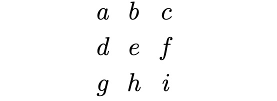
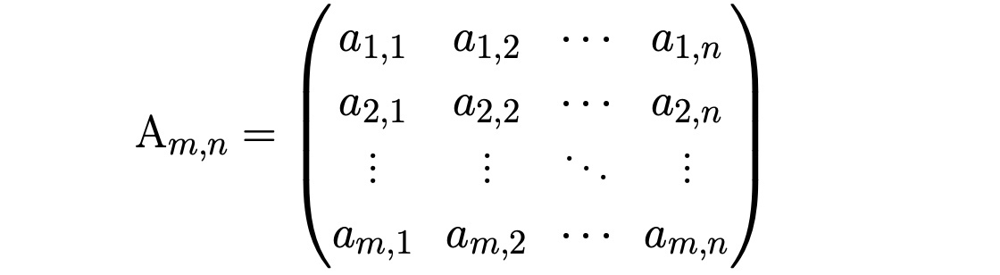
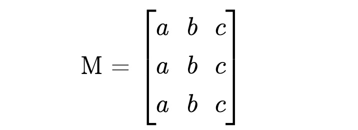
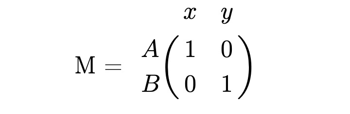
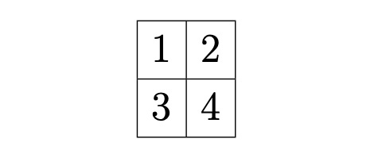
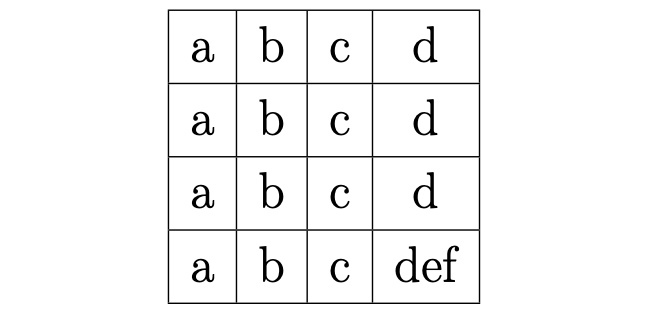
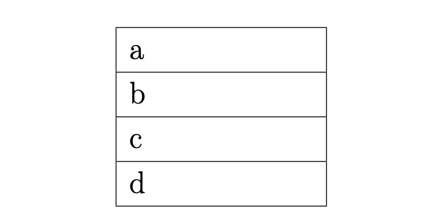
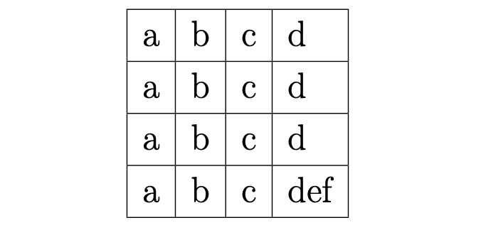
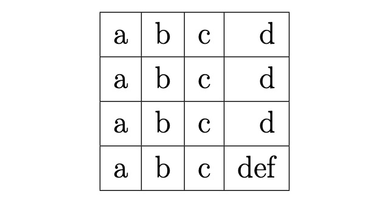

Таблицы в LaTeX
Как и любой другой язык разметки LaTeX тоже имеет таблицы в своем арсенале, причем видов таблиц здесь достаточно много, рассмотрим основные из них.
Matrix
Матрицы нужны в основном для математических операций. Для работы с матрицами нужно лишь объявить блок начала \begin{matrix} и блок конца \end{matrix}.
\begin{matrix}
a & b & c \\
d & e & f \\
g & h & i
\end{matrix}

Pmatrix
A_{m,n} =
\begin{pmatrix}
a_{1,1} & a_{1,2} & \cdots & a_{1,n} \\
a_{2,1} & a_{2,2} & \cdots & a_{2,n} \\
\vdots & \vdots & \ddots & \vdots \\
a_{m,1} & a_{m,2} & \cdots & a_{m,n}
\end{pmatrix}

Bmatrix
M = \begin{bmatrix}
a & b & c \\[0.1em]
a & b & c \\[0.1em]
a & b & c \\[0.1em]
\end{bmatrix}

BorderMatrix
M = \bordermatrix{
~ & x & y \cr
A & 1 & 0 \cr
B & 0 & 1 \cr}}

Array
Array является стандартной таблицей, что примечательно array оформляется так же как и формулы, то есть в знаках $.
$\begin{array}{|c|c|}
\hline
1 & 2 \\ \hline
3 & 4 \\ \hline
\end{array}$

Tabular
Tabular это продвинутая таблица, которая рассчитана на всевозможную работу со столбцами (вплоть до создания собственных вариаций столбцов)
\begin{tabular}{|c|c|c|c|}
\hline
a & b & с & d\\ \hline
a & b & с & d\\ \hline
a & b & с & d\\ \hline
a & b & c & def \\ \hline
\end{tabular}

\begin{tabular}{|p{3cm}|}
\hline
a\\ \hline
b\\ \hline
c\\ \hline
d\\ \hline
\end{tabular}

\begin{tabular}{|l|l|l|l|}
\hline
a & b & с & d\\ \hline
a & b & с & d\\ \hline
a & b & с & d\\ \hline
a & b & c & def \\ \hline
\end{tabular}

\begin{tabular}{|r|r|r|r|}
\hline
a & b & с & d\\ \hline
a & b & с & d\\ \hline
a & b & с & d\\ \hline
a & b & c & def \\ \hline
\end{tabular}

0